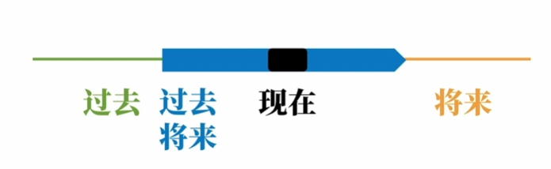
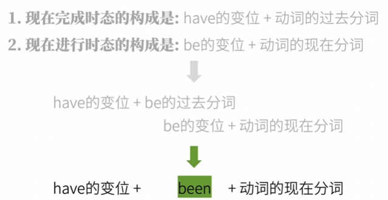
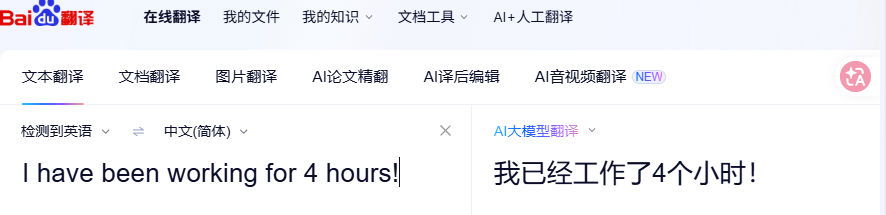
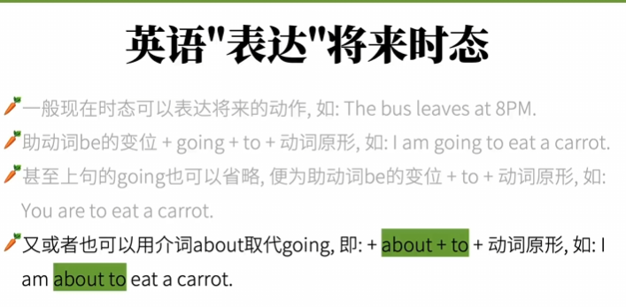

版权信息
warning
本文章为博主原创文章。遵循 CC 4.0 BY-SA 版权协议，转载请附上原文出处链接和本声明。
课程来自B站up英语兔——英语语法精讲合集 (全面, 通俗, 有趣 | 从零打造系统语法体系)，质量非常高的up，墙裂推荐。
在前一章，我们说到了动词的时间：
- 过去
- 现在
- 将来
- 过去的将来
我们可以用这个图来清晰展示这个逻辑关系：

依旧强调：过去将来和现在没有必然联系。
也说到了动词的状态：
- 一般（未透露状态信息，默认的状态）
- 完成
- 进行
- 不仅完成且继续进行 （这里其实不一定是完成，只要这件事已经做了一部分就可以，亦或者有时候我们无法说出确切的持续时间，但我们确实做了这个动作，因此改为 “不仅做了且还要继续进行”更好理解）
它们两两组合，构成了时态，所以理论上英语有十六种时态。
1. 各时态及其英文名称
| 中文名称 | 英文名称 | 语法结构（肯定句） |
|---|---|---|
| 一般现在时 | Simple Present | 主语 + do/does + 其他 |
| 现在进行时 | Present Continuous | 主语 + am/is/are + doing |
| 现在完成时 | Present Perfect | 主语 + have/has + done |
| 现在完成进行时 | Present Perfect Continuous | 主语 + have/has + been + doing |
| 一般过去时 | Simple Past | 主语 + did + 其他 |
| 过去进行时 | Past Continuous | 主语 + was/were + doing |
| 过去完成时 | Past Perfect | 主语 + had + done |
| 过去完成进行时 | Past Perfect Continuous | 主语 + had + been + doing |
| 一般将来时 | Simple Future | 主语 + will + do |
| 将来进行时 | Future Continuous | 主语 + will + be + doing |
| 将来完成时 | Future Perfect | 主语 + will + have + done |
| 将来完成进行时 | Future Perfect Continuous | 主语 + will + have + been + doing |
| 一般过去将来时 | Simple Future in the Past | 主语 + would + do |
| 过去将来进行时 | Future in the Past Continuous | 主语 + would + be + doing |
| 过去将来完成时 | Future in the Past Perfect | 主语 + would + have + done |
| 过去将来完成进行时 | Future in the Past Perfect Continuous | 主语 + would + have + been + doing |
-
第 1–10 种是日常及考试中最常见的时态。11、12次之。
-
第 13–16 种（“过去将来”系列）在现代英语中通常用
would、was/were going to等结构表达，但仍属于传统语法中的完整时态体系。
2. 以现在为时间基准
2.1. 现在进行
——正在做某事。
构成——助动词 be 的变位 + 动词的现在分词。
I am thinking of you.
2.2. 现在完成
——已经完成了某事。强调过去的事对现在有影响。
构成——助动词 have 的变位 + 动词的过去分词
you have watched this video.
2.3. 现在完成且继续进行
——已经做了，且还要继续做某事
构成—— have 的变位 + been + 动词的现在分词。
就是现在完成时态拼接现在进行时态，如下：

I have been working for 4 hours!
中文通常翻译为“我已经工作四个小时了！”，往往不能翻译出“且还要继续工作”这层意思。

2.4. 一般现在
-
表达客观规律，客观事实
The bus leaves at 8PM every day.
-
表达习惯/重复的动作
I play basetball.
它们的共同特点是无法赋予状态信息，也无法赋予时间信息。
3. 以过去为时间基准
3.1. 过去进行
构成——助动词 be 的变位 + 现在分词
构成很简单，就是在现在进行的基础上，把助动词 be 变位为过去式 were / was 。
you were watching my video.
你看，中文的字面意思仍然是“你在看我的视频”。就像我之前说的，中文与英文的在动词上的核心差异，中文无法通过动词表达出时态。
3.2. 过去完成
构成——助动词 have 的变位 + 过去分词。
构成很简单，就是在现在完成的基础上，把助动词 have 变位为过去式 had 。
类比现在完成时，过去完成要表达的是 过去的过去 对 过去 的影响。
I had eaten 5 apples for lunch yesterday, so I wasn’t hungry at all yesterday afternoon.
3.3. 过去完成且继续进行
构成——助动词 have 的变位 + been + 现在分词
have -> had
表达的是我在过去，某个时间点已经做了，且还要继续做。
I had been working for 4 hours at that time.
3.4. 一般过去
构成——动词过去式就完事儿。
一般过去时态一般只用于表明某个动作发生了/没发生。注意与现在完成时态作区别，后者强调过去发生的事对现在造成的影响。
I watched this video.
4. 以将来为时间基准
由于英语动词没有将来时的变位，所以在英语中表达将来非常灵活，如同山里灵活的狗。

以上是一些将来的表达。但是最基本，最简单的肯定是利用助动词 will。
4.1. 将来进行
同理，构成——will + 助动词 be + 现在分词
由于我们的 will 已经说明了时间为“将来”，所以就不需要依赖 be 的变位，多此一举了。
同理，表达的是将来某个时间点（十分确切）会正在进行的动作。
I will be playing overwatch tomorrow from 1PM to 3PM.
4.2. 将来完成
构成——will + 助动词 have + 过去分词
同理，该时态表达的是 将来 对 将来的将来 的影响。
最常见的就是要表达，在将来的某个时间点之前/之后，（十分确切的）已经完成了某事。我把它称为“立flag与画饼时态”。
I will have finished playing overwatch by 4PM tomorrow, so I can study English after that.
4.3. 将来完成且继续进行
构成——will + 助动词 have + been + 现在分词
I will have been playing overwatch for 2 hours by 3PM tomorrow
由于将来时态表达的都是笃定的事，所以翻译的时候可以适当的加上“肯定”。
比如上面这句话就可以这样翻译——“明天下午三点那个时候，我肯定已经玩了两个小时守望先锋了”
这个时态在实际口语和写作中不常用，因为所表达的语义很精确，所以表达较复杂。日常中如果对信息精度要求不高，推荐用简单时态来表达（其他时态也是如此），比如上面那句话，如果我只想知道你明天下午3点在做什么——
I will play overwatch at 3PM tommorrow.
4.4. 一般将来
表达将来某个时间点（十分确切会）发生的动作。
I will play video game tomorrow.
如果不太确定某事会在将来发生，则不能用一般将来时态了，我们会借助“语气”来表达。
5. 以过去的将来为时间基准
这个可以说是非常抽象了，但我认为理解的关键就是，辨清“过去的将来”和“现在”关系。
这个时态一般用在从句中？
5.1. “过去的将来”与“现在”
-
过去的将来 = 现在的过去
我昨天就知道，你今天上午一定会迟到。
对现在而言，“今天上午”已经过去；对过去而言，“今天上午”是它的将来。
-
过去的将来 = 现在的现在
我上个月就料到了，此时此刻我肯定还在苦逼地写代码。
对现在而言，“此时此刻”就是现在；对过去而言，“此时此刻”是它的将来。
-
过去的将来 = 现在的将来
我上周就和老板请好假了，我下个月要去旅行。
对现在而言，“下个月”是将来；对过去而言，“下个月”依然是它的将来。
这也是我反复说的，过去将来和现在没有必然联系。
总而言之，过去将来就是，用”过去为时间基准的将来“说事。唉，感觉怎么说都比较抽象啊，只可意会不可言传啊，，，，，，
5.2. 一般过去将来
构成——will 的过去式变位 + 动词原形、
->would do。
你看，will+动词原形表达的是将来，把will做过去式变位，衍生出过去将来，很合理吧？
别忘了，我们在上一章讲的那些不同的表达将来语句，同样可以改造成过去将来时。
比如 be going to 把 be 变位为过去式，一样表达的是过去完成。
我昨天说我今天会去图书馆。
I said yesterday that I would go to the library today.
5.3. 过去将来进行
will -> would
我昨天就料到，今天这个时候我正躺着睡觉呢。
I expected yesterday that I would be lying down sleeping at this time today.
5.4. 过去将来完成
will -> would
我昨天以为， 到今天下午我就已经写完报告了。
I thought yesterday that I would have finished writing the report by this afternoon.
5.5. 过去将来完成且继续进行
will -> would
At 8 p.m. yesterday, I knew that by midnight I would have been studying for 12 hours straight.
这个时态在实际口语中极少使用，多见于文学、叙述或需要精确表达过去对未来的持续动作的语境。一般可以用更简单的 would be doing 或上下文暗示来代替，但会损失“持续到某点已满一定时长”的精确含义。